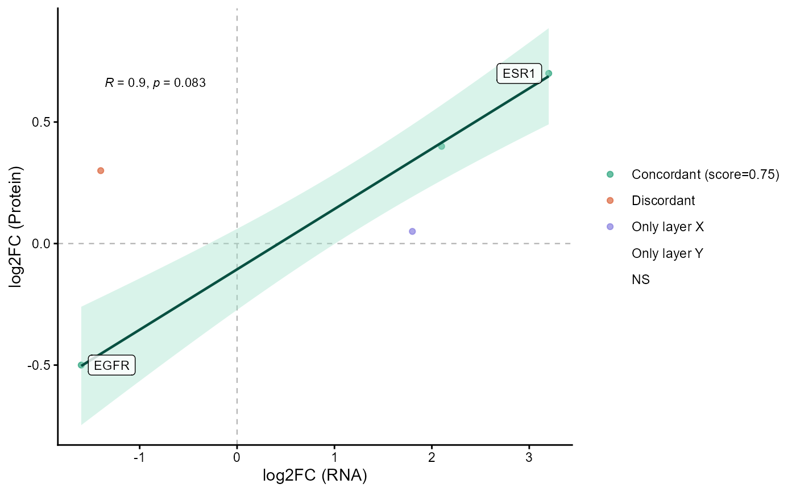

Plot cross-layer log-fold-change concordance.
nice_ConcordanceScatter.RdBuilds a scatter plot comparing log-fold changes from two omics layers after
classification with concordanceDE(). Points are colored by concordance
category, reference lines divide the plot into directional quadrants, and an
optional regression line is drawn for concordant genes.
Usage
nice_ConcordanceScatter(
concordance_result,
x_label = "log2FC (RNA)",
y_label = "log2FC (Protein)",
genes_label = NULL,
method = c("pearson", "spearman"),
ci_level = 0.95,
point_size = 1.5,
alpha = 0.65,
gene_col = NULL,
logfc_col = "logFC",
category_colors = NULL
)Arguments
- concordance_result
Output from
concordanceDE(). A data frame with acategorycolumn can also be supplied throughconcordance_result$table.- x_label
X-axis label. Default:
"log2FC (RNA)".- y_label
Y-axis label. Default:
"log2FC (Protein)".- genes_label
Optional character vector of genes to label with
ggrepel.- method
Correlation method used by
ggpubr::stat_cor(). One of"pearson"or"spearman". Default:"pearson".- ci_level
Confidence level for the linear-model confidence interval. Default:
0.95.- point_size
Point size. Default:
1.5.- alpha
Point transparency. Default:
0.65.- gene_col
Optional gene column name. If
NULL, the function uses the first column containing"gene", ignoring case.- logfc_col
Base log-fold-change column name used in
concordanceDE(). Default:"logFC", which expects columnslogFC_xandlogFC_y.- category_colors
Optional named character vector with colors for
concordant,discordant,only_x,only_y, andnot_significant.
See also
concordanceDE() to classify genes by cross-layer differential concordance;
crossLayerCorr() to estimate sample-level concordance between two omics
layers.
Examples
de_rna <- data.frame(
gene = c("ESR1", "PGR", "EGFR", "MKI67", "GATA3"),
logFC = c(3.2, 2.1, -1.6, -1.4, 1.8),
padj = c(1e-6, 0.002, 0.01, 0.03, 0.04)
)
de_protein <- data.frame(
gene = c("ESR1", "PGR", "EGFR", "MKI67", "GATA3"),
logFC = c(0.7, 0.4, -0.5, 0.3, 0.05),
padj = c(1e-4, 0.01, 0.02, 0.04, 0.40)
)
res <- concordanceDE(
de_x = de_rna,
de_y = de_protein,
logfc_threshold = c(1, 0.2)
)
if (
requireNamespace("ggpubr", quietly = TRUE) &&
requireNamespace("ggrepel", quietly = TRUE)
) {
nice_ConcordanceScatter(
res,
genes_label = c("ESR1", "EGFR"),
method = "spearman"
)
}
#> `geom_smooth()` using formula = 'y ~ x'
